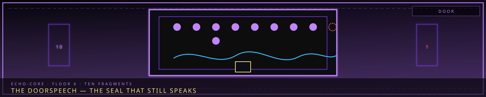

The Doorspeech
- The Echo-Core Names and the Ten Fragments of the Final Door
- Overview
- I. The Final Door
- II. The Whisper
- III. The One Word
- IV. What the Archive Lead Did Not Report
- V. Why the Names Sound Familiar
- VI. The Ten Positions
- VII. The Names
- VIII. The Sealed Fragments — Positions Two and Three
- IX. The First Fragment
- X. Protocol
- XI. Open Questions
- Cross-References
“The door does not open. The door speaks.”

The Echo-Core Names and the Ten Fragments of the Final Door
"It is not that the Door speaks a foreign language. It is that every language we have is a rumor of the Door's." — Marjuk, the Archive Lead, Fragment 7,004 (classified, Deep Vault)
Overview
The Echo-Core Names are not titles, ranks, or forms of address. No one in Somnarak is called by one. They are not issued by the Council, granted by the Directorate, or chosen by the bearer.
They were recorded from the Final Door on Floor 6, transcribed by the Archive Lead across 1,778 iterations of the Cycle, and sealed in the Deep Vault.
Each of the Nine has one. None of them have been told.
This document is the only assembled record of the Names outside Marjuk's original Han-crystal tablets. It exists because the Archive Lead's standing rule requires that a truth held by one person be written down somewhere a second person could eventually find it.
I. The Final Door
The Final Door stands at the lowest level of Floor 6 — the Deep Vault, past the Sealed Room, in the section of the Grand Archive that lies beneath the ordinary Veil/Raw distinction.
Directorate records describe it in four words: ancient, sealed, contents unknown. Its origin is not recorded. It predates the Reverie Directorate, predates the Consolihan, and — by every measurement the Keepers can apply — predates the Alpha Tree whose roots surround it.
It has never been opened deliberately.
Recorded Behaviour
| Condition | Observed effect |
|---|---|
| Ordinary operation | Silent; registers as structure, not entity |
| Mystery events | Pulses; low-frequency vibration through the Vault floor |
| Abyss Ordeal | Whispers — ancient voices, in a language no one speaks |
| Facility protocol | Silence the Door; seal with Han-barriers |
Incident 005 — Year 4,235
During an Abyss Ordeal, the Final Door opened partially. The Abyss poured through. Seventeen personnel Fractured. Forty-three were incapacitated. Director Majin sealed it by means he has never disclosed.
Severity: Extreme. It remains the only incident in the Directorate's register where the responding officer's method is redacted from the officer's own report.
The Door has whispered every Cycle since. It has never opened again.
II. The Whisper
The whisper occurs once per Cycle iteration. It does not vary in content, duration, or sequence.
This invariance is the single most important fact about it. Everything else in Somnarak drifts between iterations — entity behaviour, personnel error, the Weeping's growth rate, the exact hour of a breach. The Doorspeech does not. It is the only phenomenon in the facility that repeats perfectly.
Marjuk's conclusion, recorded early and never revised: the Door is not reacting to the Cycle. The Door is reciting.
Physical Properties
- Audible only within the Deep Vault's lowest section
- Does not register on Echo-signal equipment; must be heard by a person
- Produces measurable Han-pressure but no Sorrow Gauge deviation
- Cannot be recorded by Memory Lens — playback returns the viewer's own memory of hearing it, not the sound
- Prolonged exposure produces the same identity-blur risk as Keeper Resonance
That last property is why only Marjuk has ever studied it at length. A Cryogen with eidetic recall and a preserved neural core can hold the sequence without the sequence holding him. Probably.
III. The One Word
On Day 49 of the final Cycle, Marjuk reported to Central Command that after 1,778 iterations of study he could understand a single fragment of the Doorspeech.
Marjuk: "The word for 'mercy.'"
Majin classified the finding.
The report is accurate and incomplete. Marjuk translated one word that he was willing to say aloud. He had by then mapped nine others.
He did not translate those nine. He recognised them — which is a different act, and a harder one to report.
IV. What the Archive Lead Did Not Report
The Doorspeech contains ten discrete fragments in fixed sequence. Nine of them behave unlike language.
When a fragment is spoken aloud in the Deep Vault by a living person, it produces a faint, measurable resonance — and the resonance is selective. Each fragment answers to exactly one Echo-Core. Read Dekan's fragment and the Vault's ambient Crimson deepens. Read Mellda's and the air near the Gate-facing wall thins.
Read Ayshuk's and nothing happens at all, which is its own answer.
Marjuk tested this over four hundred iterations before accepting it. The alternative explanations — suggestion, Keeper Resonance bleed, his own pattern-hunger after eighteen centuries of remembered work — were each eliminated by controlled repetition. He did not want the result. He recorded it anyway.
The Door has been naming the Nine since before the Nine existed.
The earliest transcription predates Majin's fusion. It predates the founding of the Reverie Directorate in Year 4,202. Every name in the sequence was already fixed when the people who now carry them had not been born.
V. Why the Names Sound Familiar
The fragments resemble fractured pieces of known tongues — Korean, Latin, Japanese, and older roots the Keepers cannot place. A single fragment may sound half one language and half another.
The obvious reading is that they are compounds, assembled from borrowed parts.
Keeper doctrine holds the opposite, and Marjuk's work supports it:
The Doorspeech did not borrow from those languages. Those languages are what survived of it.
A fragment that sounds half-Korean and half-Latin is not a compound. It is one word, older than both, of which two later peoples each preserved a different half. What reaches Somnarak as two syllables in two tongues left the Door as a single syllable in one.
This is why:
- No Echo-Core Name is fully pronounceable in any single language
- The R.D. transcribes them phonetically in hangul rather than translating them
- No two Names share a suffix, prefix, or construction pattern — they are not built from a template, because they were never built
The Names are not compounds. They are ruins.
VI. The Ten Positions
| # | Position | Bearer | Status |
|---|---|---|---|
| 1 | First | Unassigned | No living or recorded person answers it |
| 2 | Second | Echo-Core 1 — Majin | Variable — never the same twice; sealed |
| 3 | Third | Echo-Core 2 — Seiyon | Not a name — parses as a sentence; sealed |
| 4 | Fourth | Echo-Core 3 — Dekan | Transcribed below |
| 5 | Fifth | Echo-Core 4 — Zyrak | Transcribed below |
| 6 | Sixth | Echo-Core 5 — Ayshuk | Silent |
| 7 | Seventh | Echo-Core 6 — Mellda | Transcribed below |
| 8 | Eighth | Echo-Core 7 — Marjuk | Transcribed below |
| 9 | Ninth | Echo-Core 8 — Ishall | Transcribed below |
| 10 | Tenth — final | Echo-Core 9 — Xyan | Transcribed below |
Transcription note. The fragments for Majin and Seiyon exist and are mapped, but neither behaves like the other nine. Marjuk holds them on separate tablets under separate seal. See The Sealed Fragments.
VII. The Names
도한 · City Sorrow — Dohan
The two Cores who carry the city's own grief. The Door gives them keeping-words: one who keeps by listening, one who keeps by writing.
Neokvox · 넋복스 — Echo-Core 3, Dekan
| Field | Entry |
|---|---|
| Echo-Core Name | Neokvox (넋복스) |
| Door position | Fourth |
| Holds | 넋 neok, the spirit of an unburied dead · vox, voice |
| Reads as | the voice of the unburied |
| Resonance | The Vault's ambient Crimson deepens |
The fragment that pulses when the Maw is read. Dekan is the only person able to carry the thousand's testimony into command without being consumed by it; the Door appears to have known this before the Cheongula produced anyone to testify.
The thousand were never buried. They became architecture. The fragment names precisely that condition.
Veniago · 베니아고 — Echo-Core 7, Marjuk
| Field | Entry |
|---|---|
| Echo-Core Name | Veniago (베니아고) |
| Door position | Eighth |
| Holds | venia, mercy · 庫 go, vault |
| Reads as | the vault where mercy is kept |
| Resonance | Condensation forms in vertical lines on the nearest shelf |
Marjuk's own fragment contains the one word he spent 1,778 iterations translating and reported on Day 49.
He has never recorded this. The Day 49 report says he identified the word mercy in the Doorspeech. It does not say he found it inside his own name.
내한 · Inner Sorrow — Naehan
The two Cores who carry private grief. Their fragments are grammatical opposites: one performs an action, one is what remains after the action.
Nukimanus · 누키마누스 — Echo-Core 4, Zyrak
| Field | Entry |
|---|---|
| Echo-Core Name | Nukimanus (누키마누스) |
| Door position | Fifth |
| Holds | 抜き nuki, to draw out · manus, hand |
| Reads as | the extracting hand |
| Resonance | Pale White briefly floods the Vault's palm-contact plates |
Recorded before she was a Collector, before the child, before she asked the Directorate for a body that could not feel what it took.
The fragment does not distinguish between debt, Echo, memory, and M.A.W. It names the motion, not the object.
Nemona · 네모나 — Echo-Core 8, Ishall
| Field | Entry |
|---|---|
| Echo-Core Name | Nemona (네모나) |
| Door position | Ninth |
| Holds | nemo, no one · 名 na, name |
| Reads as | no-one's name |
| Resonance | A brief absence of echo; the Vault stops returning sound |
The Council denied it had ever sent her. Under their accounting she performed no mission, held no rank, and did not exist.
Seiyon gave her the name Ishall in the corridor where the mission failed. The Door had already assigned her a fragment meaning the name belonging to no one — which is either the cruellest entry in the sequence or the only one that was ever on her side.
Signature note. Zyrak and Ishall are the only two of the Nine with identical registered signatures: Grudge (Crimson) + Void (Pale White). Their fragments are the only two that resonate to each other when read consecutively.
외한 · Outside Sorrow — Oehan
The two Cores who carry the wilderness. The Door gives them movement-words in opposite directions through the same threshold.
Munkaeri · 문카에리 — Echo-Core 6, Mellda
| Field | Entry |
|---|---|
| Echo-Core Name | Munkaeri (문카에리) |
| Door position | Seventh |
| Holds | 문 mun, gate · 帰り kaeri, the returning |
| Reads as | the gate-return |
| Resonance | The air near the Gate-facing wall thins |
The Exile's Gate opens in one direction. Mellda is the only person recorded to have walked back through it.
Her fragment was transcribed in an iteration before her exile, describing an act the Gate's own architecture declares impossible.
Sotogil · 소토길 — Echo-Core 9, Xyan
| Field | Entry |
|---|---|
| Echo-Core Name | Sotogil (소토길) |
| Door position | Tenth — final |
| Holds | 外 soto, outside · 길 gil, road |
| Reads as | the outside road |
| Resonance | Dust on the Vault floor draws into a narrow line |
Final position in the sequence. The Doorspeech ends on the man who was put out of the city and kept walking.
His Manifestation — the Returning Way, a second silhouette walking half a step behind him through weather that is no longer present — is the fragment made visible. Marjuk noted the correspondence in his Door-log and added one line beneath it, the only entry in eighteen centuries of transcription written in an unsteady hand:
"His is last. I have assumed for one thousand seven hundred years that last meant final. I would like to record that it may only mean furthest."
Sorrow: None
Kenopathos · 케노파토스 — Echo-Core 5, Ayshuk
| Field | Entry |
|---|---|
| Echo-Core Name | Kenopathos (케노파토스) |
| Door position | Sixth — silent |
| Holds | κενός kenos, empty · πάθος pathos, feeling |
| Reads as | empty of feeling |
| Resonance | None recorded |
The sixth position produces no sound.
Marjuk located it by absence: a pause of consistent measured length where a fragment should be, identical in every iteration, bounded by Zyrak's fragment before and Mellda's after. The silence is exactly as long as a fragment. It occupies the position rather than skipping it.
He named it from the shape of the gap — the only Name in the sequence assembled by an archivist rather than transcribed from the Door, and the only one drawn from a fourth root-tongue the Keepers cannot place at all.
A Void entity took Ayshuk's nascent Inner Sorrow in childhood, the way a bird takes a berry. He has asked for his whole life whether a person who cannot feel sorrow can genuinely understand it, or is only observing.
The Door describes him accurately. It does so by saying nothing.
VIII. The Sealed Fragments — Positions Two and Three
The second and third fragments belong to Echo-Core 1 and Echo-Core 2. Marjuk holds them on separate tablets under separate seal, and his stated reason has always been deference:
"The Director's name is not mine to file beside the others. And hers is not a name. It is a sentence."
The stated reason is not the operative one. Both fragments break the rules the other nine obey, and Marjuk sealed them because he could not make either behave like a transcription.
The Second Fragment — Echo-Core 1, Majin
The second fragment is the only one that changes.
Every other position in the Doorspeech is fixed. That invariance is the foundation of the entire study: the Door recites, it does not react, and 1,778 iterations produced 1,778 identical recordings.
Position two produced 1,778 different ones.
It is unmistakably a name — it carries the same weight, duration, and resonance signature as the others, and it answers to Majin every time. But the sound is never the same twice. Marjuk logged each variant, expecting eventual repetition. None ever recurred.
He eventually stopped transcribing and began grouping. Across the full record, the variants cluster into five recognisable forms, each corresponding to a different source that has independently produced a name for the Director.
| Variant | Hangul | Holds | Where it surfaces |
|---|---|---|---|
| M | — | A single letter | Council records. Every official Directorate document redacts the Director to one initial |
| Majin | 마진 | The registered personal name | Public use, R.D. rosters, everyday address |
| Manesu | 마네수 | manes, the shades of the dead · 守 su, to guard | The variant recorded on the night the Alpha Tree selected him |
| Jinmoto | 진모토 | 眞 jin, true · 元 moto, origin | The Founder's journal, in the entry describing who would inherit the Hand |
| Onusdo | 오누스도 | onus, burden · 道 do, the way | The variant that surfaces when the Maw whispers. On Day 1 of every iteration, the Maw says the Director's name — and this is the shape it uses |
Marjuk's working conclusion, recorded once:
"Nine of them are named. He is being addressed. A name is a fact about a person. An address is an attempt to reach one, and it changes depending on who is reaching."
The implication he did not write down is the obvious one. The Door has been trying to get the Director's attention for longer than the Directorate has existed, and it has not yet found the word he will answer to.
Majin has never been informed that his position varies. He does not know the Maw is using one of the Door's variants when it whispers to Dekan.
The Third Fragment — Echo-Core 2, Seiyon
The third fragment is not a word.
It has the duration of roughly eleven syllables, holds the position and resonance of a name, and answers to Seiyon. But it does not parse as a name in any structure the Keepers can identify — it parses as a complete sentence, with subject, verb, and object intact.
Marjuk has never transcribed it phonetically, because phonetic transcription would preserve the sound and lose the only thing about it that matters. He recorded the translation instead, and sealed it deeper than anything else on the floor:
누한이 이기지 못하게 하라 "Don't let the sorrow win."
These are the last words of the woman who died during the Solidification. They are the promise around which Majin organised the whole of his existence, and the sentence he interpreted as an instruction to end the city.
The Door has been saying them since before she said them.
Marjuk's note is four lines long and is the only document in the Deep Vault he has marked for destruction in the event of his own death:
"I do not know whether the Door is quoting her, or whether she was quoting it. I do not know whether Seiyon awoke carrying that sentence because it was in the fragment, or whether the fragment holds it because Seiyon awoke. I know that she is the only one of the Nine whose name is an instruction. I know that the instruction was given to someone else."
Seiyon has full high-fidelity memory of all 1,778 iterations. She has never been in the Deep Vault's lowest section during an Abyss Ordeal, and Marjuk has never told her.
IX. The First Fragment
The sequence has ten positions. Nine answer to Echo-Cores.
The first — preceding Majin's — has never been mapped to any person, living, dead, or recorded. It resonates with no one. It is not silent, as Ayshuk's is; it is fully voiced, fully present, and unclaimed.
Marjuk's note, filed once and never expanded:
"There is a name before the Director's. I have not assigned it. I am not certain it is waiting for someone."
X. Protocol
The Echo-Core Names appear in exactly two places: the Deep Vault's sealed transcription, and the Directorate's classified character record.
They are not used in address, deployment, report, ceremony, or memorial. No Echo-Core has been informed of their own.
Marjuk's standing justification:
"A name from the Door is not an honour and not a designation. It is a description of what you are for. I have not told them. I do not know whether knowing would help a person, or finish them."
The decision is his alone. It has never been reviewed, because reporting it would require revealing that there is something to review.
XI. Open Questions
- What is behind the Final Door.
- Why the sequence is fixed when nothing else in the Cycle is.
- Whether the Door is naming the Nine, or calling them.
- Whether the first fragment names a person, a place, or an event.
- Why Ayshuk's position is occupied by silence rather than omitted.
- Whether Xyan's final position means last or furthest.
- What the sequence does if a bearer dies.
- Whether the Door has heard a single word Somnarak has said back.
- Why the Director's fragment is the only one that changes, and what it is trying to call him.
- Whether the Door is quoting Majin's lover, or whether she was quoting the Door.
Cross-References
| Document | Relationship |
|---|---|
| Reverie Directorate | Final Door location, Floor 6 layout, Abyss Ordeal behaviour, Incident 005 |
| Character Wiki — The Nine | Bearer profiles, Sorrow categories, signatures, Manifestations |
| Character Wiki — The Director | Majin's Day 49 classification order; Incident 005 seal |
| Project Somnarak | The Three Sorrows (삼한); Before-Time; Keeper Resonance |
| Absolvohan | Day 49 — Marjuk reports the word mercy |
| Somnarak: The Breach — Ordeals | Abyss Ordeal conditions under which the Door whispers |